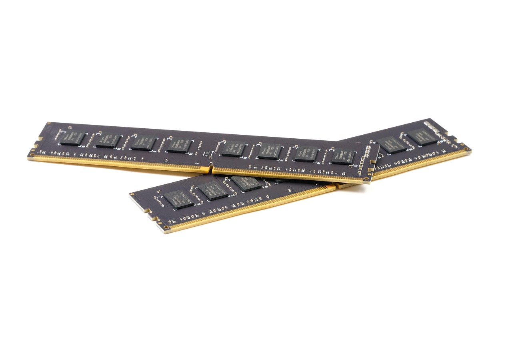

미중 기술 빗장 고착, 韓 균형자 실제 조건 3가지

2025년 4월 미국이 엔비디아 H20 중국 수출을 전면 차단한 이후 미중 양국은 추가 기술 협상보다 각자 내재화 경쟁을 가속하고 있다. 이번 정상회담에서도 반도체 의제는 공식 아젠다에서 제외됐다. 미국 상무부는 2026년 상반기 내 추가 첨단칩 수출통제 규정 개정을 예고한 상태다.
삼성전자와 SK하이닉스는 중국 매출 비중이 각각 약 28%, 35%였으나, 미중 규제 동시 강화로 이 비중이 2025년 말 기준 삼성 21%, SK하이닉스 26% 수준으로 하락한 것으로 추정된다. 반면 미국 팹리스(엔비디아·AMD·퀄컴)로부터의 HBM3E 수주는 2025년 한 해 SK하이닉스 기준 전년 대비 40% 증가했다.
한국이 균형자로 기능하려면 ①HBM 이후 차세대 메모리(CXL·PIM) 독점적 기술 확보 ②소재·장비 국산화율 40% 이상 달성 ③핵심광물 비중국 조달 계약 60% 이상 확보가 동시에 충족돼야 한다. 현재 세 조건의 달성률은 각각 추정 60%, 22%, 31%로 모두 미달이다.
미중 기술 격리가 고착될수록 한국 반도체 기업은 '두 시장 동시 공략'이라는 기존 전략을 버려야 하는 압박을 받는다. 실제로 삼성전자는 2025년 중국 시안 낸드 공장 증설을 동결했고, SK하이닉스는 우시 D램 라인의 기술 업그레이드를 미국 측 허가 범위 내로 제한했다.
균형자 전략의 핵심은 '어느 편도 들지 않는 중립'이 아니라 '양측 모두가 필요로 하는 기술 독점'이다. HBM3E 이후 HBM4 시장에서 SK하이닉스 단독 양산 시점이 2025년 말이면, 6개월 안에 미국 빅테크가 SK하이닉스에 구조적으로 묶이는 공급 구도가 만들어진다. 이 시간 창이 한국의 실질적 협상 레버리지다.
SK하이닉스는 HBM3E 세계 점유율 53%(2025년 기준)를 기반으로 미국 AI 인프라 투자 확대의 최우선 수혜자다. 엔비디아 B200 시리즈의 HBM3E 독점 공급 지위가 유지되는 한, 2026년 HBM 부문 영업이익 기여율은 전사 기준 35%를 넘을 전망이다.
ASML은 EUV 장비 공급처 중 중국을 사실상 배제한 유일한 업체로, 미중 분리 구도가 심화될수록 비중국 팹 투자 증가와 직결돼 수주 잔고가 구조적으로 증가한다.
삼성전자는 HBM 경쟁 지연과 중국 매출 감소가 동시에 작동하며 이중 압박에 놓였다. 2025년 3분기 기준 HBM3E 엔비디아 공급 승인이 지연된 상태에서 중국 시장 축소까지 더해져, 반도체 부문 영업이익이 전년 대비 18% 감소했다는 추정치가 나온다.
중국 파운드리 SMIC는 EUV 없이 7nm 이하 공정 진입이 차단된 상태에서 미국 팹리스 고객마저 전략적으로 이탈 중이다. 현재 SMIC의 28nm 이상 레거시 공정 가동률은 78% 수준으로, 초과공급 구조가 가격 하방 압력을 만들고 있다.
한국 반도체 기업 투자자라면 '중국 매출 비중'보다 'HBM 다음 세대 기술 전환 속도'를 핵심 지표로 봐야 한다. HBM4 양산 일정과 CXL 메모리 표준화 기여도가 향후 2년 내 밸류에이션 격차를 만드는 변수다.
구매담당자 입장에서는 미중 양측 규제 변화를 분기별로 추적하는 것보다 '어떤 기술 세대가 규제의 경계선인가'를 파악하는 것이 더 실용적이다. 현재 기준선은 HBM2E 이하는 허용, HBM3 이상은 수출허가 대상이다. 이 선이 언제 HBM4로 이동하느냐가 핵심이다.
실제 조달 현장에서는 — 미국 팹리스들이 HBM 공급 계약에 '중국 공장 생산분 배제' 조항을 명문화하기 시작했다. SK하이닉스 이천·청주 생산분은 허용하지만 해외 파트너 생산분에는 원산지 확인 절차를 요구하는 사례가 늘고 있다. 공급계약 협상 시 생산 거점 명시 조항을 반드시 확인해야 한다.
이 포스팅은 쿠팡 파트너스 활동의 일환으로 수수료를 제공받습니다.